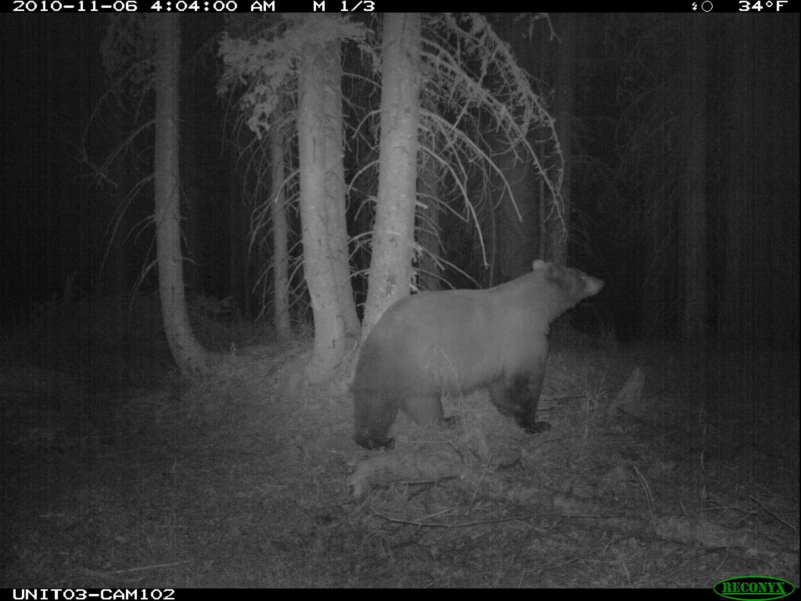
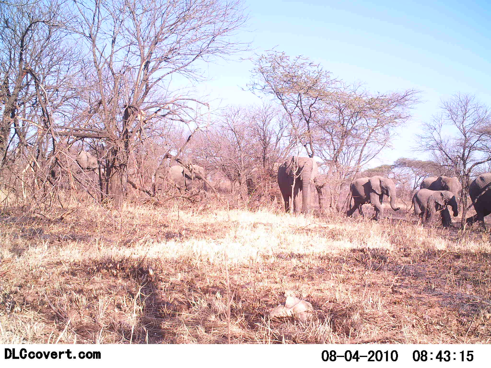
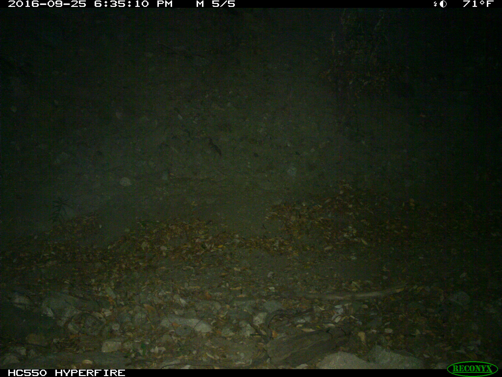

AI × 生態研究 · SpeciesNet
相機拍下照片，接著怎麼認出動物？
用真實相機照片，分清楚找位置、提出分類與人員核對。
閱讀完整文字
相機拍下了什麼？
先看這張虎貓照片。動物的外形、姿態與周圍環境，都保留在完整原圖裡。
這是來源照片。接下來會分開呈現找位置、提出分類與人工核對。
不同照片，需要分別判讀
接著看虎貓、黑熊、象群與空景四張照片。每一張都有自己的來源，不能把它們當成同一地點的連續觀察。
畫面排列與停留時間是解說安排，不代表拍攝地點或原始時間順序。
先找到動物，再看同圖細節
框線標出偵測器提出的位置。選取虎貓所在的候選框後，從同一張原圖放大，保留可回查的來源。
偵測框回答位置問題；它本身不是物種分類。放大只裁切原圖，沒有生成另一張動物影像。
分類名稱與分數，要一起看
先看虎貓，再換黑熊。畫面呈現這次執行取得的分類輸出；名稱與分數仍要回到照片核對。
分類分數不是族群比例，也不是經人工確認的正確率。本段不把模型輸出當成已確認紀錄。
有多個動物，也可能沒有動物
同一張象群照片中的候選框，可能得到不同分類。逐框對照原圖與輸出，再看沒有分類候選的空景照片。
符合分類門檻的框都保留。回退為動物或判成空景的結果，也要逐框回查；框數不能直接當成個體數。
四筆紀錄，都能回到原圖
四張照片各保留一筆待人工覆核的紀錄。點選原圖，重新檢查位置、分類與來源。
目前沒有任何一筆被標為人工確認。照片與模型輸出保留在一起，讓後續核對有依據。
照片與來源
這裡保留完整原圖。可對照動畫中的局部畫面，閱讀每張照片的來源與使用說明。
P01 · 有斑紋的動物照片
WCS Camera Traps，Wildlife Conservation Society。CDLA-Permissive-1.0；原圖未修改。
本輪整理後的模型輸出：虎貓。人工覆核仍待進行。

P02 · 夜間的黑白照片
North American Camera Trap Images，NACTI data contributors。CDLA-Permissive-1.0；原圖未修改。
本輪整理後的模型輸出：美洲黑熊。人工覆核仍待進行。

P03 · 同張照片裡的多隻動物
Snapshot Serengeti，Snapshot Serengeti data contributors。CDLA-Permissive-1.0；原圖未修改。
本輪整理後的模型輸出：7 個框進入分類，需逐框覆核；整理結果包含非洲象、動物、空景。人工覆核仍待進行。

P04 · 官方空景範例
North American Camera Trap Images，NACTI data contributors。CDLA-Permissive-1.0；原圖未修改。
本輪整理後的模型輸出：未產生分類輸出。人工覆核仍待進行。